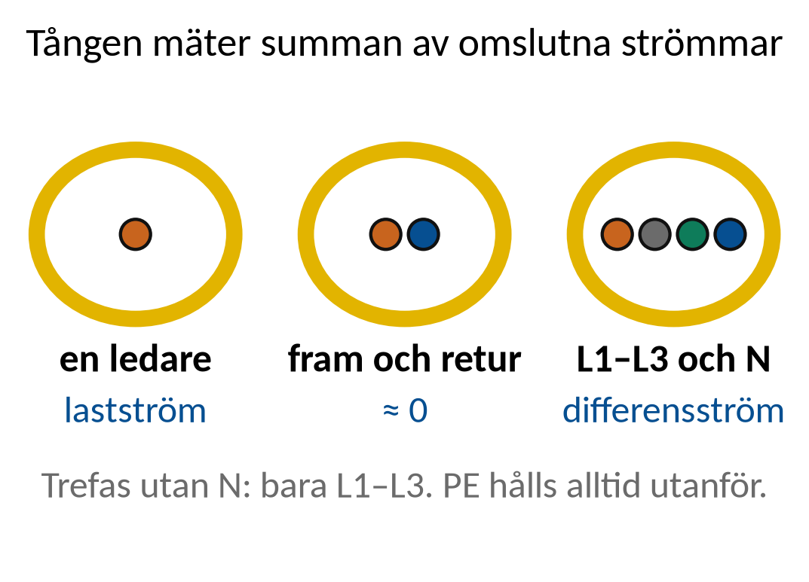
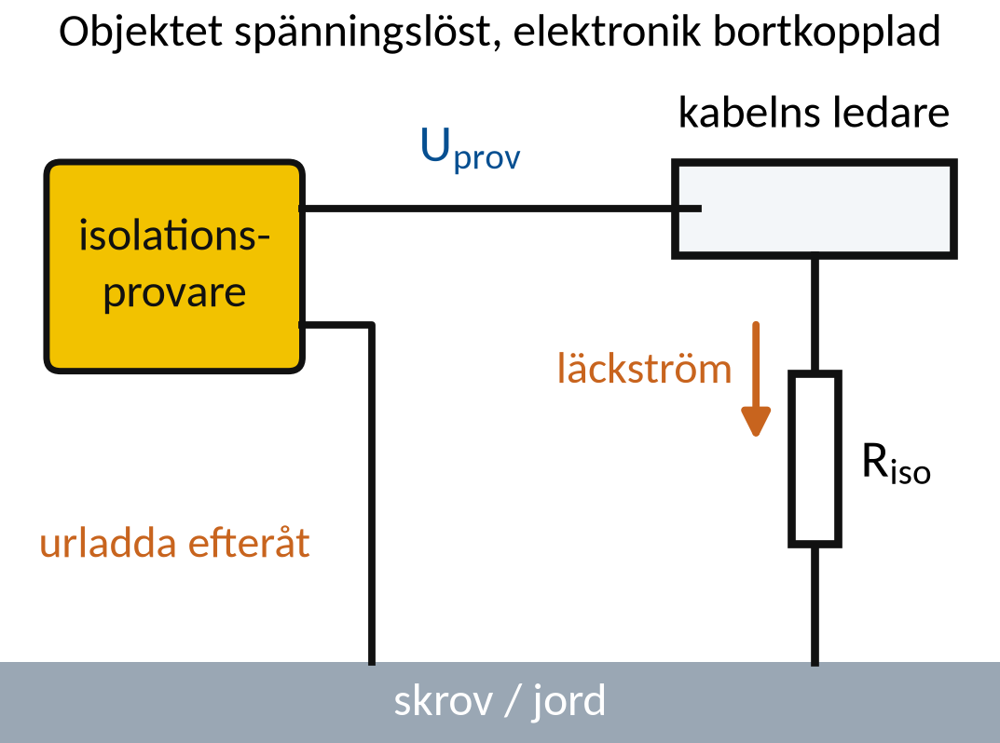
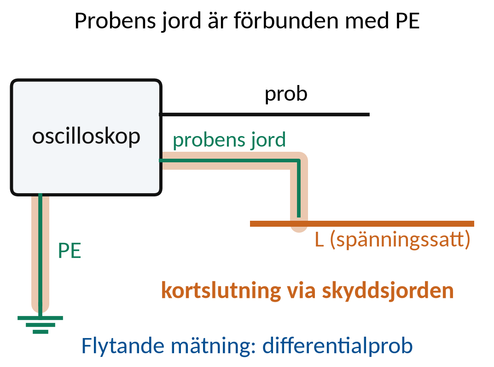
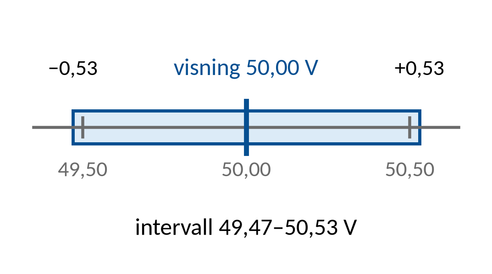
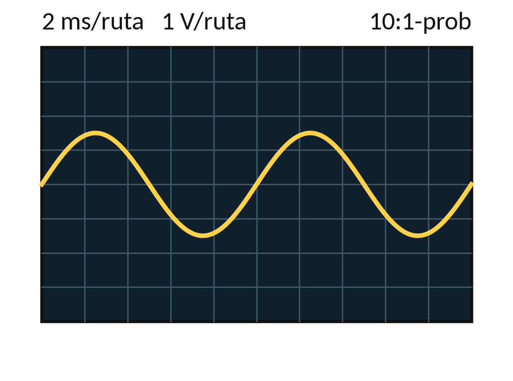
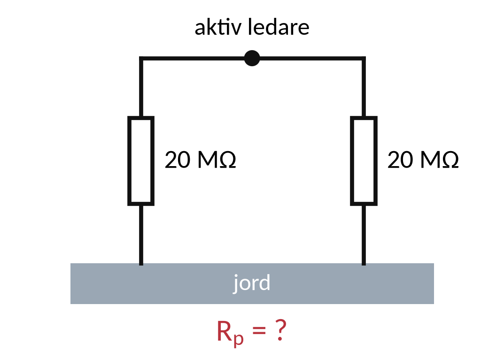
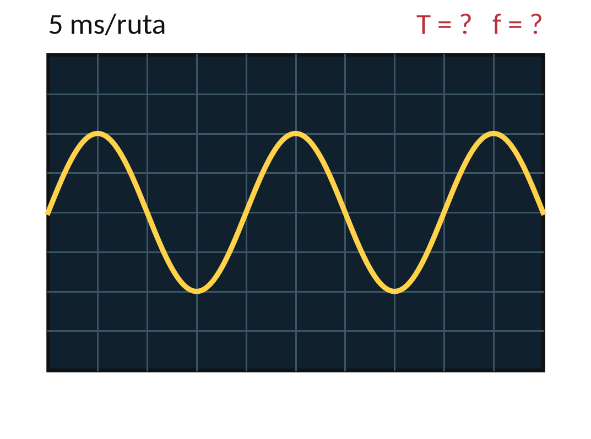

Vecka 44 · Del 3 av 3
Del 3: Fördjupad mätteknik
1 Översikt
Det här ska du kunna
- Välja mätprincip för en definierad fråga.
- Tolka mätdata tillsammans med instrumentets begränsningar.
Fundera först: Varför kan en strömtång visa nästan noll runt en kabel där lasten drar 10 A? Svaret finns i teorin nedan.
Så gör du
- Läs teorin ett avsnitt i taget (7 korta avsnitt). Sist i varje avsnitt står vilka övningar du kan göra direkt.
- Följ exemplen med papper och räknare, steg för steg. Gissa nästa steg innan du läser det.
- Gör övningarna 3.1–3.10. Fastnar du: Ledtråd 1 visar vilket samband du behöver och var i teorin det förklaras. Ledtråd 2 visar hur du börjar och Ledtråd 3 exemplet som räknar samma sorts uppgift med andra tal. Öppna facit när du har ett eget svar.
- Lämna in veckans uppgifter: Veckans inlämning.
Så skriver du en lösning som går att följa
1. Givet och sökt
Skriv av värden, enheter och vad du ska bestämma.
2. Samband och villkor
Välj formel eller princip. Kontrollera koppling, driftfall och antaganden.
3. Uträkning och kontroll
Omvandla enheter, sätt in värden och tolka resultatet.
I resonemangsfall: koppla observation till en motiverad slutsats.
Lärarens presentation · PDF · Räknarhjälp · Formelblad
Förkortningar och beteckningar i den här delen (10)
- R
- resistans. Resistorns motstånd mot ström. Beror inte på frekvensen. Enhet: Ω (ohm).
- T
- periodtid. Tiden för en hel period. T = 1/f. Enhet: s eller ms. 50 Hz ger T = 20 ms.
- f
- frekvens. Antal hela perioder per sekund. Enhet: Hz.
- true RMS
- äkta effektivvärde. En true RMS-mätare räknar fram det verkliga effektivvärdet för alla kurvformer. En enklare, sinuskalibrerad mätare visar rätt bara för ren sinus.
- RMS
- effektivvärde (engelska: root mean square, som betyder kvadratiskt medelvärde). Det värde som ger samma värme i en resistor som en lika stor likspänning. När en spänning anges utan annat, till exempel 230 V eller 12,00 V RMS, är det effektivvärdet. Multimetern visar effektivvärdet. Behöver du skilja effektivvärdet från andra värden skrivs det URMS (eller IRMS för ström). Enhet: V eller A.
- DC
- likström, likspänning (engelska: direct current). Ström eller spänning med samma riktning hela tiden, till exempel från ett batteri. På multimetern V⎓ eller DC.
- IT-nät
- isolerat nät (franska: isolé–terre). Nät utan direkt förbindelse mellan systemet och jord eller skrov. Vanligt ombord. Behandlas i vecka 44.
- ms
- millisekund. En tusendels sekund: 1 ms = 0,001 s.
- Hz
- hertz. Enheten för frekvens: 1 Hz är en period per sekund. Elnätet ombord är ofta 50 eller 60 Hz. 1 kHz = 1 000 Hz.
- û, î
- toppvärde (u med hatt). Spänningens högsta värde räknat från noll. För sinus är û = √2 · U. Toppvärdet för ström skrivs î. Enhet: V.
2 Teori
Ett avsnitt i taget: öppna det, läs, och gör sedan övningarna som står sist i avsnittet. Formeln bredvid rubriken är det viktigaste i avsnittet.
1Mätkedjan och enheterna
En givare kan omvandla ström till en liten spänning.
Känslighet i mV/A talar om hur signalen räknas om.
Probfaktor korrigerar visningen bara om instrumentet inte redan gör det.
Mätmetod, område och driftvillkor behövs för att tolka varje resultat.
Öva nu: Övning 3.2, Övning 3.7
2Strömtångens mätprincipFram- och returström kan ta ut varandra
En strömtång känner det magnetfält som omslutna strömmar skapar.
För lastström omsluts normalt en ledare.

Fram- och returström kan ta ut varandra
Differensström: alla aktiva ledare genom tången, faserna och N om den finns, men inte PE.
Använd en läckströmstång för mA-området. Vid omriktare: true RMS, mät på nätsidan.
Öva nu: Övning 3.1
3IsolationsmätningProvspänning och metod väljs för utrustningen
Instrumentet lägger på en definierad provspänning och mäter responsen.
Resultatet påverkas av objekt, temperatur, fukt och mättid.

Provspänning och metod väljs för utrustningen
Verifiera spänningslöshet. Koppla bort isolationsvakt, omriktare och elektronik.
Provspänning enligt utrustningens anvisning, för 440 V-utrustning ofta 500 V DC. Urladda till jord efteråt.
Öva nu: Övning 3.3, Övning 3.4, Övning 3.10
4JordresistansmätningR = U/I i den förenklade mätmodellen
Metoden behöver skilja jordtagets egenskaper från parallella vägar.
Hjälpelektroder eller selektiva metoder används beroende på systemet.
R = U/I i den förenklade mätmodellen
Mätgeometri och anslutningar påverkar resultatet.
Ett lågt tal utan metodbeskrivning är otillräckligt.
Öva nu: Övning 3.5
5Oscilloskopets referensJordad eller isolerad mätning måste vara planerad
Ett vanligt bänkinstruments probjord är kopplad till skyddsjord.
Fel anslutning kan skapa en kortslutning mot jord.

Jordad eller isolerad mätning måste vara planerad
Flytande mätningar kräver differentialprob med rätt mätkategori.
I IT-nät ger probjord på en fas ett jordfel och larm, och kortslutning om ett annat fel redan finns.
Öva nu: Övning 3.6
6Osäkerhet och felgränsResultatets intervall behöver följa med slutsatsen
Upplösning, instrumentspecifikation och spridning är olika bidrag.
Enkel summering kan användas som konservativ gräns i uppgifter.

Resultatets intervall behöver följa med slutsatsen
1 % av 50,00 V + 3 steg à 0,01 V ger ±0,53 V.
En full mätosäkerhetsbudget kräver en beskriven modell.
Öva nu: Övning 3.8, Övning 3.9
7Kalibrering och kontrollStatus, datum, användning och kontrollresultat
Kalibrering jämför instrumentet med en spårbar referens.
Justering och kalibrering är olika moment.
Status, datum, användning och kontrollresultat
Ett kalibreringsbevis garanterar inte att instrumentet förblir felfritt efter exempelvis fall, överlast eller skadad ledning.
3 Exempel
Följ exemplet steg för steg med papper och räknare. Försök själv med nästa steg innan du läser det. Övningarna använder samma metod med andra tal.
E1Resistans från läckström
En stationär resistiv modell ger 0,10 mA vid 250 V provspänning.
R = U/I
- 0,10 mA = 0,00010 A.
- R = 250/0,00010 = 2 500 000 Ω.
- R = 2,5 MΩ efter division med 1 000 000.
Kontroll: 2 500 000 Ω · 0,00010 A = 250 V. Ingen praktisk provning ingår här.
E2Oscilloskopets skalor
En hel period upptar 5 rutor à 2 ms. Visad topp är 1,5 V med 10:1-prob utan automatisk kompensation.

T = rutor · tidsbas f = 1/T
û = probfaktor · ûvisad
- T = 5 · 2 = 10 ms = 0,010 s.
- f = 1/0,010 = 100 Hz.
- û = 10 · 1,5 = 15 V.
Tidsskalan styr frekvensberäkningen. Probfaktorn korrigerar spänning, inte tid.
4 Övningar
Räkna på papper. Bocka av en övning när du har kontrollerat ditt svar mot facit. Avbockningen sparas i den här webbläsaren.
Övning 3.1: Två ledare i tången
Lasten tar 10 A. Tången omsluter både fram- och returledaren. Vad visar en ideal tång om ingen ström tar någon annan väg?
Givet: 10 A ut och 10 A tillbaka. Ingen ström tar någon annan väg. Tången är ideal och passar för strömmen.
Ledtråd 1: vilket samband?
Använd Tångens bidrag = algebraisk strömsumma. Läs Teori 2: Strömtångens mätprincip.
Ledtråd 2: hur börjar jag?
Strömmarna fram och tillbaka går åt olika håll, så deras magnetfält tar ut varandra när tången omsluter båda ledarna. Lägg ihop strömmarna med tecken och jämför med en mätning runt bara en ledare.
Ledtråd 3: steg för steg med andra tal
1) Tången mäter summan av alla strömmar som går genom den, med riktning. 2) Ström åt ena hållet räknas plus och åt andra hållet minus. Exempel: 6 A ut i en ledare och 4 A tillbaka i en annan, båda inne i tången, medan 2 A tar en annan väg: tången visar 6 − 4 = 2 A. Använd samma tänkande på uppgiften.
Facit
0 A. Strömmarna fram och tillbaka tar ut varandras magnetfält. Tången ska omsluta en ledare.
Övning 3.2: Tångens utgång
En strömtång ger 10 mV/A. En mätare visar 250 mV. Beräkna strömmen.
Givet: Känslighet 10 mV/A och visning 250 mV. Bortse från nollfel och andra instrumentfel.
Ledtråd 1: vilket samband?
Använd I = Utång/k. Läs Teori 1: Mätkedjan och enheterna.
Ledtråd 2: hur börjar jag?
k är tångens känslighet i mV/A och Utång dess utspänning i mV. Dela visningen med känsligheten – mV delat med mV/A ger A.
Ledtråd 3: steg för steg med andra tal
1) Känsligheten säger hur många mV tången ger per ampere. 2) Dela visningen med känsligheten, i samma enhet. Exempel: en tång med 100 mV/A som visar 3 200 mV ger I = 3 200/100 = 32 A.
Facit
I = 250/10 = 25 A.
Svar: I ≈ 25,0 A
Övning 3.3: Isolationsdata
Ett isolationsprov med 500 V ger en stabil läckström på 0,25 mA. Beräkna isolationsresistansen.
Givet: Isolationen räknas som en ren resistans: 500 V och 0,25 mA. Uppgiften är bara en beräkning.
Ledtråd 1: vilket samband?
Använd R = Uprov/Iläck. Läs Teori 3: Isolationsmätning.
Ledtråd 2: hur börjar jag?
1 mA = 0,001 A och 1 MΩ = 1 000 000 Ω. Gör om läckströmmen till A, dela spänningen med strömmen och gör om svaret till MΩ.
Ledtråd 3: steg för steg med andra tal
1) Gör om strömmen till ampere: mA delat med 1 000. 2) R = U/I. 3) Gör om Ω till MΩ. Exempel: 1 000 V och 0,40 mA ger R = 1 000/0,00040 = 2 500 000 Ω = 2,5 MΩ. Rimlighet: liten läckström betyder hög isolationsresistans.
Facit
R = 500/0,00025 = 2 000 000 Ω = 2,0 MΩ.
Svar: R ≈ 2,0 MΩ
Övning 3.4: Parallell isolation
Två isolationsvägar på 20 MΩ vardera går parallellt från samma ledare till jord. Beräkna den sammanlagda resistansen.
Givet: R1 = R2 = 20 MΩ. Båda vägarna går mellan samma ledare och jord.

Ledtråd 1: vilket samband?
Använd Rp = R1 · R2/(R1 + R2). Läs Teori 3: Isolationsmätning.
Ledtråd 2: hur börjar jag?
Två parallella vägar släpper tillsammans igenom mer läckström än en ensam. Använd parallellformeln och räkna i MΩ hela vägen.
Ledtråd 3: steg för steg med andra tal
1) Parallella vägar ger lägre resistans än den minsta vägen. 2) Använd Rp = R1 · R2/(R1 + R2). Exempel: 30 MΩ och 60 MΩ parallellt ger Rp = 1 800/90 = 20 MΩ.
Facit
Rp = 20 · 20/40 = 10 MΩ.
Svar: R ≈ 10 MΩ
Övning 3.5: Jordresistansmodell
En jordtagsmätning ger 0,40 V vid provströmmen 20 mA. Beräkna R.
Givet: 0,40 V och 20 mA. Andra bidrag försummas.
Ledtråd 1: vilket samband?
Använd R = U/I. Läs Teori 4: Jordresistansmätning.
Ledtråd 2: hur börjar jag?
V/A ger Ω. Gör om mA till A innan du delar.
Ledtråd 3: steg för steg med andra tal
1) Gör om strömmen till ampere. 2) R = U/I. Exempel: 0,90 V vid 30 mA ger R = 0,90/0,030 = 30 Ω.
Facit
R = 0,40/0,020 = 20 Ω.
Svar: R ≈ 20 Ω
Övning 3.6: Oscilloskopets tidsbas
En period tar fyra rutor, och tidsbasen är 5 ms per ruta. Beräkna periodtid och frekvens.
Givet: En hel period tar 4 rutor. Tidsbasen är 5 ms per ruta.

Ledtråd 1: vilket samband?
Använd T = antal rutor · tid/ruta; f = 1/T. Läs Teori 5: Oscilloskopets referens.
Ledtråd 2: hur börjar jag?
T måste vara i sekunder för att f ska bli i Hz. 1 ms = 0,001 s. Räkna ut periodtiden i ms, gör om till s och dela sedan 1 med den.
Ledtråd 3: steg för steg med andra tal
1) Periodtiden är antalet rutor gånger tiden per ruta. 2) Gör om till sekunder och räkna f = 1/T. Exempel: 5 rutor à 2 ms ger T = 10 ms = 0,010 s och f = 100 Hz.
Enheter: byt prefixet mot en tiopotens
| Prefix | Betyder | Gånger |
|---|---|---|
| k (kilo) | tusen | 1 000 |
| m (milli) | tusendel | 0,001 = 10⁻³ |
| µ (mikro) | miljondel | 0,000 001 = 10⁻⁶ |
| n (nano) | miljarddel | 10⁻⁹ |
Så gör du: skriv talet och byt prefixet mot talet i tabellen.
- 382 mH = 382 · 0,001 H = 0,382 H
- 47 µF = 47 · 10⁻⁶ F = 0,000 047 F
- 16,7 ms = 16,7 · 0,001 s = 0,0167 s
På räknaren: 47 µF skrivs 47 och sedan tiopotensknappen (×10ˣ) och −6.
Kontroll: i formlerna ska L stå i henry (H), C i farad (F) och t i sekunder (s). Svaret i ms får du genom att gånga sekunderna med 1 000.
Facit
T = 4 · 5 = 20 ms. f = 1/0,020 = 50 Hz.
Svar: T ≈ 20 ms · f ≈ 50 Hz
Övning 3.7: Probens dämpning
En prob med dämpningen 10:1 används. Skärmen visar toppvärdet 2,0 V, och oscilloskopet räknar inte om automatiskt. Bestäm signalens verkliga toppvärde.
Givet: Probfaktor 10, visat toppvärde 2,0 V. Den automatiska omräkningen är avstängd.
Ledtråd 1: vilket samband?
Använd ûverklig = probfaktor · ûvisad. Läs Teori 1: Mätkedjan och enheterna.
Ledtråd 2: hur börjar jag?
En 10:1-prob dämpar spänningen till en tiondel innan den når oscilloskopet. Multiplicera en gång med 10. Om oscilloskopet redan räknar om automatiskt får du inte multiplicera igen.
Ledtråd 3: steg för steg med andra tal
1) Probfaktorn säger hur mycket proben dämpar signalen. 2) Multiplicera skärmens värde med faktorn när oscilloskopet inte räknar om. Exempel: en prob 100:1 och visningen 1,5 V ger den verkliga signalen 150 V.
Facit
û = 10 · 2,0 = 20 V.
Övning 3.8: Instrumentgräns
Instrumentet visar 100,0 V. Specifikationen är ±(0,5 % + 2 siffror) och upplösningen 0,1 V. Beräkna felgränsen och intervallet.
Givet: Visat värde 100,0 V, a = 0,5, n = 2 och steg = 0,1 V.
Ledtråd 1: vilket samband?
Använd δ = (a/100) · visning + n · steg och Intervall: visning − δ till visning + δ. Läs Teori 6: Osäkerhet och felgräns.
Ledtråd 2: hur börjar jag?
a är procenttalet, n antalet siffror, steg upplösningen och δ den totala felgränsen. Räkna de två delarna var för sig, lägg ihop dem och räkna ut intervallets båda gränser.
Ledtråd 3: steg för steg med andra tal
1) Procentdelen: a % av det visade värdet. 2) Siffrorna: n gånger upplösningen. 3) Lägg ihop och skriv intervallet visning − δ till visning + δ. Exempel: 230,0 V med ±(1,0 % + 3 siffror) och upplösningen 0,1 V ger δ = 2,3 + 0,3 = 2,6 V och intervallet 227,4–232,6 V.
Facit
δ = 0,5 V + 0,2 V = 0,7 V. Intervall 99,3–100,7 V.
Övning 3.9: Upprepade mätningar
Tre mätningar ger 9,8, 10,0 och 10,2 V. Beräkna medelvärde och variationsbredd.
Givet: Mätvärdena 9,8, 10,0 och 10,2 V. Ingen statistisk analys behövs.
Ledtråd 1: vilket samband?
Använd Medel = (x1 + x2 + x3)/3 och Variationsbredd = xmax − xmin. Läs Teori 6: Osäkerhet och felgräns.
Ledtråd 2: hur börjar jag?
Medelvärdet visar var värdena ligger, och variationsbredden är största minus minsta värdet. Lägg ihop värdena och dela med tre. Räkna sedan variationsbredden för sig.
Ledtråd 3: steg för steg med andra tal
1) Medelvärdet: summan delat med antalet mätningar. 2) Variationsbredden: största minus minsta värdet. Exempel: 23,6, 24,1 och 24,2 V ger medel ≈ 23,97 V och variationsbredden 0,6 V.
Facit
Medel = 10,0 V. Variationsbredd = 0,4 V.
Svar: Medel ≈ 10,0 V · bredd ≈ 0,4 V
Övning 3.10: Spårbar slutsats
En isolationsmätning ändras från 100 MΩ till 10 MΩ. Varför räcker det inte att direkt säga att isoleringen har skadats?
Givet: Värdet har gått från 100 till 10 MΩ, men det står inget om under vilka förhållanden mätningarna gjordes.
Ledtråd 1: vilken princip?
Utgå från Jämförbara mätvillkor krävs för en trend. Läs Teori 3: Isolationsmätning.
Ledtråd 2: hur börjar jag?
Provspänning, mättid, temperatur, fukt och inkopplad utrustning påverkar värdet. Ange vilka förhållanden som måste jämföras innan du drar en slutsats. Håll isär ett lägre mätvärde och en bevisad skada.
Ledtråd 3: steg för steg
1) Vilka förhållanden påverkar ett isolationsvärde: provspänning, mättid, temperatur, fukt och vad som var inkopplat? 2) Var de lika vid de två mätningarna? 3) Skriv slutsatsen så att den skiljer mellan ”lägre värde” och ”skadad isolation”.
Facit
Provspänning, mättid, temperatur, fukt och inkopplad utrustning kan skilja mellan mätningarna. Jämför villkoren innan du drar slutsatsen att isolationen är skadad.
Klart med delen?
Vilken del av en mätning måste dokumenteras utöver det visade talet?
Lämna v44-inlämningen senast söndag 1 november. Bifoga beräkningar, mätvillkor, felgränser och motiverade slutsatser.
5 Labben
Labben kommer sist i veckan, när du har gått igenom del 1–3. Du använder samma metod som i övningarna: räkna först, läs av, jämför och förklara.
Veckans labbar Veckans inlämning
Källor och fortsatt läsning
Studieplanen YH03151, 18 september 2026 Sjöskolans kursmaterial och originalmall
Fluke: mätning med strömtång
Tektronix: oscilloskopprober och säkerhet
Megger: jordresistansmätning
Fluke: multimeterns funktioner och mätning